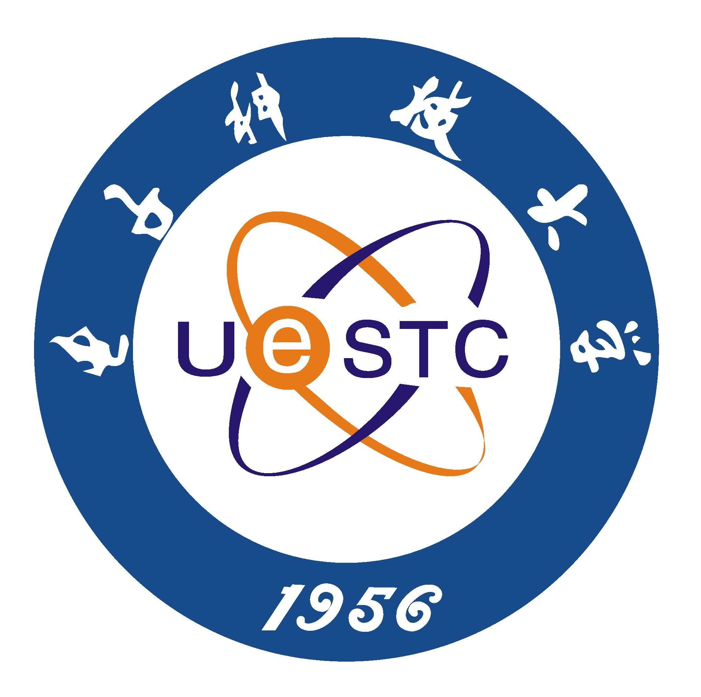
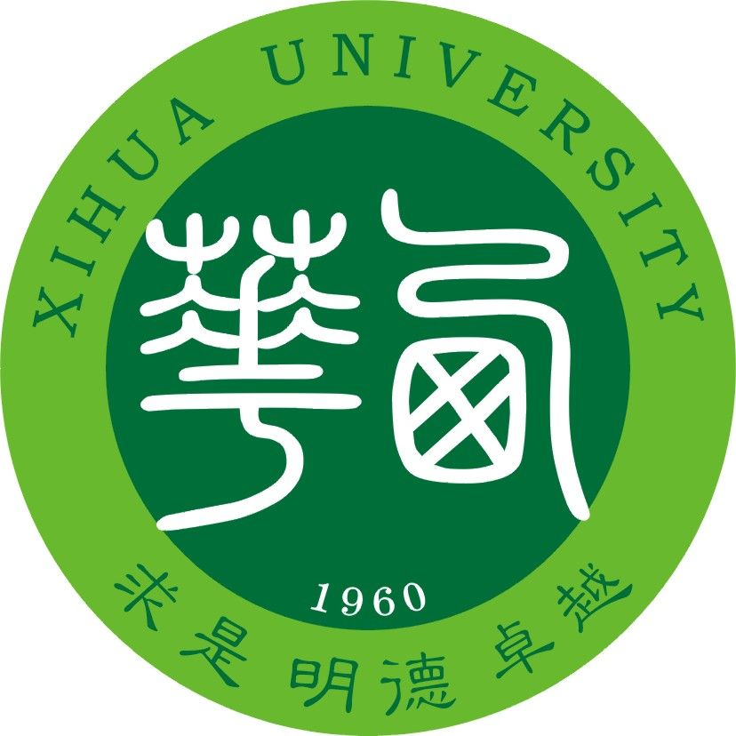
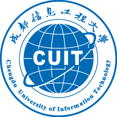
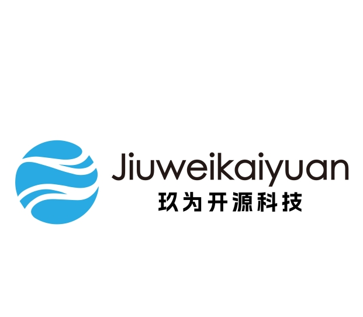
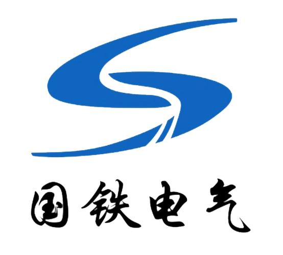
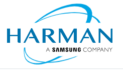

王伟 (Wei Wang)
特聘研究员，国家工程实验室
教师，机器人专业
博士/博士后，川大/电子科大
contact
add1:
信息楼111房间，航空港校区，
成都信息工程大学，
成都，610225，中国
add2:
同兴路11号，
重庆工业大数据创新中心，
重庆，400707，中国
请邮件或微信联系
Email:wangwei83@cuit.edu.cn
王伟 (Wei Wang)
特聘研究员，国家工程实验室
教师，机器人专业
博士/博士后，川大/电子科大
add1:
信息楼111房间，航空港校区，
成都信息工程大学，
成都，610225，中国
add2:
同兴路11号，
重庆工业大数据创新中心，
重庆，400707，中国
请邮件或微信联系
Email:wangwei83@cuit.edu.cn
|
[Google Scholar] [ORCID] [GitHub1] [GitHub2] [News] [学校官网] [知乎] [CSDN] [玖为开源] [青桐创新] |
四川崇州人，持续秉承“知可为知可不为；手脑并用，知行合一；小隐于野大隐于市”的理念。
Wang.David.Wei has received his PhD degree majoring in Computer Science at School of Computer Science, Sichuan University, China in 2021. He is conducting his postdoctoral research at University of Electronic Science and Technology of China and Chongqing Innovation Center of Industrial Big-Data Co.Ltd since 2023.7. He is also now a lecturer in Chengdu University of Information Technology at School of Automation. His research interests include 1)CV particular focus on 3D object detection, 2)non-intrusive load monitoring and 3)edge intelligent computing, 4) vertical large model.
王伟博士，为重庆工业大数据创新中心和电子科技大学联合招收在职博士后，同时受聘为工业大数据应用技术国家工程实验室特聘研究员和成都信息工程大学讲师，具备10余年（包括万龙电气、华为技术、哈曼国际等）国内国际知名企业的智能软件算法产品研发管理经验。博士及博士后期间参与了10余项科研项目，其中2项为国家级项目。主持4项横向课题。已发表SCI论文12篇，取得授权专利6项。研究方向包括物联网数据挖掘、3D感知等边缘智能技术。
Reviewer of IEEE Transactions on Network Science and Engineering，JCR Q1，中科院2区，IF=6.6
Reviewer of Biomedical Signal Processing and Control，JCR Q2，中科院2区，IF=5.1
Reviewer of Frontiers in Physics，JCR Q2，中科院3区，IF=3.1
Reviewer of IEEE SmartCity-2022
Reviewer of ICONIP 2023 CCF C会议
Reviewer of ACAIT 2023
Reviewer of ICIST 2023
Reviewer of “科创中国”平台科技成果鉴定委员会
“科创中国”天府大道科创走廊产业科技服务团--专家团队成员
四川大学国家大学科技园技术经理人
成都市蒲江县大兴镇玉龙村“乡村振兴智库”--“荣誉村民”
成都市成华区双桥子街道菽香里社区微网格员
中国图象图形学会会员
中国计算机学会会员
现代控制理论 [2022年秋季、2023年春季]
第08章 非线性控制系统分析
第09章 线性系统的状态空间分析与综合
与研究课题的关系：
Mamba和状态空间模型(SSM)的视觉指南：替代 Transformers 的语言建模方法 2024.4.1
一文通透想颠覆Transformer的Mamba：从SSM、HiPPO、S4到Mamba 2024.4.26
第10章 动态系统的最优控制方法
与研究课题的关系：
最优控制方法和点云配准是两个在技术上相当复杂且领域明显不同的主题。 最优控制理论旨在找到一种控制策略，使得给定的性能指标最优化。常见的方法包括： 1. 庞特里亚金最小原理：提供了解决最优控制问题的一种强大方法，通过引入共轭变量（或影子价格）和哈密顿函数，将控制问题转换为求解边界值问题。 2. 动态规划：由贝尔曼发展，适用于离散时间和连续时间系统。动态规划通过将复杂的优化问题分解为更小的子问题解决，每个子问题只做一次决策，并利用这些决策的结果递归地解决整个问题。 3. 线性二次调节器（LQR）：特别适用于线性系统和二次成本函数。LQR通过解析方法来计算反馈增益，从而实现状态变量的最优调节。 点云配准是计算机视觉和机器人技术中的一个关键技术，用于将从不同视角或在不同时间点采集的多个点云数据集合并到同一坐标系统中。常见的点云配准技术包括： 1. 迭代最近点（ICP）算法：这是一种常用的点云配准方法，工作原理是迭代地寻找两个点云间最近的点对，然后计算使得这些点对间距离最小的变换（包括平移和旋转）。 2. 正态分布变换（NDT）：适用于大规模点云数据。NDT通过将空间划分为若干小的体元格，并在每个体元格内使用点的统计分布，来估计点云之间的最佳对齐方式。 3. 特征基点云配准：首先从点云中提取特征点，然后使用特征匹配技术找到对应点，最后通过求解最优变换完成配准。这种方法常用于点云稀疏或含有丰富特征的场景。 这两个领域的研究都涉及到高级数学和计算方法，通常需要专业的软件工具或编程库来实现。例如，最优控制问题可以使用MATLAB或Python中的控制系统工具箱进行模拟和分析，而点云配准则常用PCL（点云库）或Open3D这类专门的库来处理。
机器人控制元件与控制系统 [2022、2023、2024年秋季]
第6章 开环控制调速系统
第7章 闭环控制调速系统
第8章 机器人视觉控制应用
8.1 机器人视觉算法与图像处理概述；8.2 三维视觉检测技术；8.3 机器人视觉控制实例
与研究课题的关系：
三维图像获取：介绍如何使用立体视觉、结构光、激光扫描等方法获取三维图像。 点云数据处理：解释点云的生成、处理和优化，以及如何从点云中提取有用信息。 三维重建技术：讨论如何通过三维视觉数据重建对象或环境的详细三维模型。 三维视觉在机器人中的应用：案例研究，如在自动化仓库、生产线和其他工业环境中的应用。

机器学习及Python实现 [2023年秋季，2024年秋]
与研究课题的关系：
在机器学习和Python实现的范畴内，三维点云处理是一个非常前沿和实用的研究领域，它在许多应用中扮演着关键角色，如自动驾驶汽车、机器人导航、环境建模和文物重建等。以下是一些基本的机器学习技术和Python库，这些技术和库可以用于处理和分析三维点云数据。 1. Python库用于三维点云处理 Open3D: 这是一个开源库，支持多种点云处理任务，如点云读取、显示、过滤和重建。Open3D还提供了高效的数据结构和算法来处理3D数据。 PCL (点云库): 虽然主要是C++库，但PCL也有Python接口。它提供了大量的点云处理功能，包括点云滤波、点云分割、模型拟合、表面重建等。 NumPy 和 SciPy: 这些科学计算库为处理和操作大型数据集提供支持，非常适用于点云数据的数值分析和基本操作。 2. 机器学习方法在三维点云处理中的应用 点云分类和分割 卷积神经网络（CNNs）: 尽管CNNs主要用于图像数据，但它们也可以通过将点云投影为2D视图或通过开发专用于处理点云的3D CNN架构来应用于点云。 PointNet和PointNet++: 这是一种直接在点云上操作的深度学习框架，能够学习点云数据的空间编码。PointNet非常适合用于点云的分类和分割任务。 对象检测和跟踪 基于区域的CNN（R-CNN）: 对于涉及到识别和定位3D对象的任务，可以通过对点云数据应用R-CNN来识别和定位单个对象。 3D YOLO: 为点云数据扩展的YOLO（You Only Look Once）框架可以实现快速的对象检测。
面向对象程序设计C++[2026年春季，预计]
与研究课题的关系：
面向对象程序设计（OOP）在C++中用于处理三维点云数据时，能够提供一个清晰、模块化和可扩展的架构，这对于处理复杂的点云操作和算法非常有帮助。在C++中使用OOP进行点云处理，通常涉及创建几个类来封装与点云相关的数据和操作，例如点云的存储、处理和可视化。 1. 设计基本类： 首先，你可能需要设计几个基本类来表示点、点云、以及可能的点云操作。 Point 类: 用于存储单个点的坐标（通常是x, y, z）和可能的额外数据（如颜色、法线、强度等）。 PointCloud 类: 用于存储点的集合，并提供添加点、删除点、访问点等操作。 PointCloudProcessor 类: 用于实现点云的处理算法，如滤波、分割、配准等。 2. 实现点和点云类： 这里是如何在C++中使用OOP概念来实现Point类和PointCloud类的简单例子。 3. 点云处理类的设计： 接下来，可以创建一个处理点云的类，例如实现点云的滤波和降采样： 4. 点云库的使用： 在C++中，你还可以使用专门的点云处理库如PCL（Point Cloud Library），它提供了丰富的点云处理功能，如IO操作、点云滤波、三维特征计算、表面重建等。PCL是完全用C++编写的，并广泛使用OOP概念，使其非常适合在面向对象的项目中使用。 总结 通过使用面向对象的方法，可以创建清晰且易于管理的点云处理应用。OOP提供了数据封装、继承和多态性等优点，这些都有助于提高代码的重用性和可维护性。对于复杂的三维数据处理任务，这种方法尤其有效。
嵌入式系统原理与设计[2024年春季]
与研究课题的关系：
在嵌入式系统中处理三维点云数据，关键在于优化软件以适应硬件资源的限制和实时性要求。设计时主要采用轻量级算法，通过算法简化和降低解析度来减少计算负担。软硬件协同设计至关重要，软件设计需要针对硬件特性进行优化，如利用实时操作系统（RTOS）进行精确的任务调度和资源管理，确保数据处理的高效和实时性。此外，通过使用专门的数据流管理策略和缓冲区技术，可以优化内存使用和加速数据处理。实现这些策略不仅需要深入理解嵌入式系统的硬件限制，还需精通软件架构的调整，以支持复杂的点云处理任务，从而满足自动驾驶、机器人导航等现代技术应用的需求。
CDIO工程实践 [2022、2023、2024年春季] 教学大纲
《工程实践》是一门实践性的课程，是培养学生动手能力，结合实践学习理论的重要环节。通过实践教学，使学生具备初步的工程意识和实践能力。教学过程强调学生动手实践，教师指导为辅，在掌握基础工程实践技能的同时，开展自主设计，完成工程项目的设计，促进综合工程能力和创新思维的开发。
《工程实践》是机器人工程专业的核心专业必修实践课程。该课程作为本专业工程技术人才培养体系的主线，贯穿第2至第6学期整个教学过程。课程内容综合了智能系统软件与硬件结构等多个课程群的理论知识和实践技能，融入工程设计理念，实现理论和实践相结合，在机器人工程人才培养过程中具有重要地位和作用。
2021级7人：板球控制系统
2022级4人：自动驾驶小车的感知系统
2023级4人：
与研究课题的关系：
工程实践课程通常是指在工程教育中，学生通过实际操作、实验、设计、制作等活动，将理论知识应用于解决实际问题的过程。这种课程有助于培养学生的动手能力、创新思维和解决实际问题的能力。 三维点云处理是计算机视觉和图形学领域中的一个重要分支，主要涉及对三维空间中大量点的数据集（点云）进行分析和处理。点云数据通常由三维扫描仪、激光雷达（LiDAR）或其他传感器收集而来，它们可以用于创建三维模型、进行空间分析、导航和避障等多种应用。 工程实践课程与三维点云处理研究之间的关系可以从以下几个方面来理解： 1. **技术应用**：在工程实践课程中，学生可能会使用三维点云处理技术来解决一些工程问题，比如结构设计、地形测绘、机器人导航等。 2. **技能培养**：通过三维点云处理的研究和实践，学生可以学习到数据处理、算法设计、软件编程等技能，这些技能对于工程领域的职业发展非常重要。 3. **创新项目**：三维点云处理可以作为工程实践课程中的一个创新项目，鼓励学生探索新的应用场景，进行创新设计。 4. **跨学科学习**：三维点云处理结合了计算机科学、数学、工程等多个学科的知识，工程实践课程可以作为跨学科学习的桥梁，帮助学生建立综合知识体系。 5. **实际问题解决**：工程实践课程强调解决实际问题，而三维点云处理技术在很多实际工程问题中都有应用，比如在建筑、土木工程、城市规划等领域。 6. **研究与实践相结合**：通过工程实践课程，学生可以将三维点云处理的理论研究转化为实际应用，加深对理论知识的理解和掌握。 7. **团队合作**：在三维点云处理的项目中，通常需要团队合作来完成复杂的任务，这与工程实践课程中强调的团队协作精神相契合。 8. **技术前沿**：三维点云处理是当前技术发展的前沿领域之一，工程实践课程可以帮助学生接触到最新的技术动态，为未来的职业生涯打下坚实的基础。 总的来说，工程实践课程为学生提供了一个将三维点云处理等先进技术应用于解决实际工程问题的平台，有助于提升学生的综合素质和专业技能。

2023:基于三维点云数据的目标检测算法软件系统设计与实现 [论文]
2023:基于视觉与文本技术的看图写话系统设计与实现 [论文]
2023:基于机器视觉反馈的板球运动控制系统设计与实现[论文]
2023:基于视觉技术的人数统计系统设计与实现[论文]
2024:基于yolov5的高空抛物不安全行为检测系统设计与实现 [GitHub]
2024:基于人脸识别的教室管理系统设计与实现 [GitHub]
2024:面向大学生的搜题学习网站设计与实现 [Gitee]
2024:自平衡莱洛三角形设计与实现 [Gitee]
将这些本科毕业设计项目的研究方向进一步凝练为“智能视觉算法与系统设计与应用”。这个研究方向的核心要素包括： 1）机器视觉：利用计算机视觉技术进行图像和视频分析，实现目标检测、行为识别等功能。 2）视觉反馈控制：将机器视觉技术应用于控制系统，如板球运动控制系统，实现对运动物体的精确控制。 3）三维点云处理：专注于工业视觉检测领域，处理和分析三维空间中的点云数据，用于目标识别、空间建模等。 4）人工智能与深度学习：应用深度学习算法，进行更高效的视觉任务处理。
|  | 在职博士后 重庆工业大数据创新中心和电子科技大学 联合招收(2023.7 ~ 2025.7)
合作导师：邢镔，教授级高工，博导 合作导师：张乐，教授，博导 团队导师：朱策，教授，博导，IEEE Fellow |
博士 四川大学 (2017.9 ~ 2021.12)
合作导师：陈良银，教授，博导 导师资源：何田，教授，博导，京东集团副总裁、ACM/IEEE Fellow 导师资源：叶军，阿里巴巴集团副总裁、钉钉总裁 |
|  | 本科 西华大学(原四川工业学院) (2002.9 ~ 2006.7)
杰出校友：王华明，教授，博导，中国工程院院士 |
|  | 讲师（副教授待遇） 成都信息工程大学 (2022.3 ~ 至今)
杰出校友：陈睿，bilibili董事长兼CEO |
|  | 技术总监 成都玖为开源科技有限公司 (2024.3 ~ 至今)
|
 |
外聘专家 超网实业（成都）股份有限公司 (2024.5 ~ 至今)
|
|  | 技术顾问 成都国铁电气设备有限公司 兼职(2022.7 ~ 2024.2)
|
|  | 软件工程师 哈曼(中国)投资有限公司 (2012.9 ~ 2017.4)
|
软件工程师 华为技术有限公司 (2011.9 ~ 2012.8)
|
软件工程师 苏州万龙电气集团股份有限公司 (2006.9 ~ 2011.8)
项目导师：唐晓泉，清华大学博士后，原中科院电工所副研究员，1999-2000年四川工业学院机械工程系教师 |
1）高等学校教师资格证（任教学科：计算机科学与技术）
2）成都市技术转移与技术经理人研修班结业证书
3）2023年四川省计算机能力挑战赛优秀指导老师证书
6）Zhang, L., Zuo, Y., Jia, Y., Li, D., Zeng, R., Li, D., Chen, J., & Wang, W. (2024). DS-Former: A dual-stream encoding-based transformer for 3D medical image segmentation. Biomedical Signal Processing and Control, 89, 105702. https://doi.org/10.1016/j.bspc.2023.105702, （SCI Q2, 中科院2区，IF=5.1，通信作者）
5）Guo, M., Wang, W., Huang, X., Chen, Y., Zhang, L., & Chen, L. (2022). Lyapunov-Based Partial Computation Offloading for Multiple Mobile Devices Enabled by Harvested Energy in MEC. IEEE Internet of Things Journal, 9(11), 9025–9035. https://doi.org/10.1109/JIOT.2021.3118016（SCI Q1, 共同一作）
4）Wang, Z., Wang, W., Zhang, Z., Hu, F., Xia, X., & Chen, L. (2022). DeepEdge: A Novel Appliance Identification Edge Platform for Data Gathering, Capturing and Labeling. Sensors , 22(7), 2432. https://doi.org/10.3390/s22072432（SCI Q2，共同一作）
3）Wang, W., Jing, H., Liao, J., Yin, F., Yuan, P., & Chen, L. (2020). A Safe Charging Algorithm Based on Multiple Mobile Chargers. Sensors , 20(10), 2937. https://doi.org/10.3390/s20102937（SCI Q2, 一作）
2）Wang, W., Wang, Z., Chen, Y., Guo, M., Chen, Z., Niu, Y., Liu, H., & Chen, L. (2021). Bats: An Appliance Safety Hazards Factors Detection Algorithm with an Improved Nonintrusive Load Disaggregation Method. Energies, 14(12), 3547. https://doi.org/10.3390/en14123547（SCI Q3, 一作）
1）Yanru Chen, Bingshu Yan, Liangxiong Wei, Min Guo, Feng Yin, Qian Luo, Wei Wang, Liangyin Chen. (2019). DSLA: Dynamic sampling localization algorithm based on virtual anchor node. KSII Transactions on Internet and Information Systems, 13(10). https://doi.org/10.3837/tiis.2019.10.007（SCI Q4,通信）
6）Jin, X., Zhang, G., He, J., Yu, W., Jiang, S., Wang, W., Guo, D., Zheng, F., Deng, Y., & Yang, Q. (2023). Event-Triggered bundled target traversing path planning using a dynamic elliptical guidance region for unmanned surface vehicles. Applied Ocean Research, 141, 103793. https://doi.org/10.1016/j.apor.2023.103793（SCI Q1, 中科院2区，IF=4.3， 第六作者）
5）You, Y., Wang, W., Li, D., Jia, Y., Li, D., Zeng, R., & Zhang, L. (2023). Multi‐modal machine learning based on electrocardiogram data for prediction of patients with ischemic heart disease. Electronics Letters, 59(2). https://doi.org/10.1049/ell2.12708（SCI，二作）
4）Zhang, Z., Feng, Z., Wang, W., & Guo, Y. (2022). A 3D Face Modeling and Recognition Method Based on Binocular Stereo Vision and Depth-Sensing Detection. Journal of Sensors, 2022, 1–11. https://doi.org/10.1155/2022/2321511（SCI Q3,三作）
3）Zhang, Z., Feng, Z., Guo, Y., & Wang, W. (2022). Three-dimensional Face Recognition Method Based on Multiresolution Model and Fuzzy Random Matrix. Mathematical Problems in Engineering, 2022, 1–10. https://doi.org/10.1155/2022/2393014（SCI Q4,四作）
2）Guo, M., Huang, X., Wang, W., Liang, B., Yang, Y., Zhang, L., & Chen, L. (2021). HAGP: A Heuristic Algorithm Based on Greedy Policy for Task Offloading with Reliability of MDs in MEC of the Industrial Internet. Sensors , 21(10), 3513. https://doi.org/10.3390/s21103513（SCI Q2,三作）
1）Zhang, Y., Wei, L., Guo, M., Wang, W., Sun, Y., Wang, J., & Chen, L. (2019). VN-NDP: A Neighbor Discovery Protocol Based on Virtual Nodes in Mobile WSNs. Sensors , 19(21). https://doi.org/10.3390/s19214739(SCI Q2,四作)
1）一种电压启动型断路器电气防跳电路，第2作者
2）一种光纤带复合电力光缆，第2作者
3）基于CSI幅度-子载波概率分布的陌生人识别算法，第2作者
4）一种基于电力插线头的物联网标签技术，第5作者
5）一种基于李雅普诺夫优化的多服务器计算卸载方法，第6作者
6）一种基于属性过滤度的计数匹配方法，第10作者
1）一种基于轨道剖面点云数据的铁路道岔识别算法，第2作者
1）基于区块链的大规模制造产业可信溯源理论与方法研究，四川大学十大基础研究进展，2021，第11作者
1）面向高速动态复杂交通场景的三维视觉检测算法研究与应用, 中国博士后基金项目, 8w, 在申, 主持
2）自动驾驶跟踪巡线，huawei+cf，联系客户阶段
3) 基于卫星网络的高速移动物体视觉信息采集分析关键技术研究，卫星互联网重点实验室，在申
4) 医学图像处理+3D+骨骼横向课题，20w，第二轮接洽中
1）基于三维视觉算法的交通场景目标检测方案研究及应用, 成都信息工程大学引进人才科研启动, 10w, 在研, 主持
2）基于三维视觉算法的电力装备检测算法研究及应用, 横向项目, 10w, 在研, 主持
3）融合三维视觉的水下感知技术研究应用, 横向项目, 10w, 在研, 主持
4）视觉精益管控模型研发, 工业大数据应用技术国家工程实验室项目, 10w, 在研, 主持
1）xx工作人员xx身心状态监测xxx技术，国防基础科研核科学挑战专题，6~~0w，（以川大科研助理名义）
1）粤海水务供水厂需水量预测项目建议书，百度智能云，对接阶段，暂停对接已经转给广州工业大学
2）基于非侵入式负荷分解的反窃电技术研究，国网四川省电力公司群创项目，在申，技术负责人
3）高可靠性自主化单氢在线监测及预警策略关键技术研究，国网公司项目储备-需求建议阶段
4）电力微气象实时多源异构数据灾害预警分析，重庆电力公司科技部门，需求收集阶段
5）基于大数据的线路损坏算法研究，贵州电网+南充电网
6）基于三维视觉算法的工业装备检测智能化关键技术研究与应用, 四川省科技厅区域合作成渝合作项目, 60w, 在申, 主持
7）工业场景下垂域视觉模型研究及工程应用，国家级科技创新平台基础研究能力提升项目，50w/200w，在申，外协
1）国家自然科学基金委员会, 面上项目, 62072319, 基于深度学习的实用型物联网物理层密钥生成和安全通信方法研究, 2021-01-01 至 2024-12-31, 57万元, 在研, 参与
2）四川省科技厅, 四川省重点研发项目, 2023YFG0180, 基于自学习智能增长的高铁侵限检测关键技术研究, 2023-01 至 2024-12, 20万元, 在研, 参与
3）四川省科技厅, 四川省重点研发项目第二版 , 22ZDYF3672, 工业物联网实时数据同步技术研究与应用, 2022-01 至 2023-12, 100万元, 参与
4）保密通信国防科技重点实验室, 保密通信国防科技重点实验室项目, 6142103190415, 基于量子密钥的物联网安全技术研究, 2020-01 至 2021-12, 20万元, 参与
5）四川省科技厅, 四川省重点研发项目, 2019YFG0184, 面向装备诊断和运维的区块链工况数据管理平台研究, 2019-01 至 2020-12, 20万元, 参与
未进入决赛
2）57个国家A类竞赛 链接


https://cdwangwei.site/，其中cd(成都or川大or成电)，wangwei.site(王伟的网址)